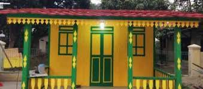
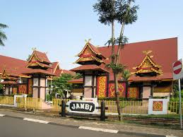
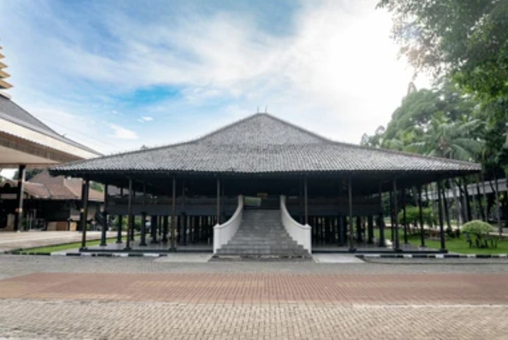

🏘️ Betawi
• Rumah Kebaya
Rumah Kebaya adalah rumah adat khas masyarakat Betawi yang berasal dari Jakarta. Nama "kebaya" diambil dari bentuk atap rumah ini yang menyerupai lipatan kebaya, yaitu pakaian tradisional wanita Indonesia. Rumah ini umumnya terbuat dari kayu dengan atap berbentuk pelana terlipat dan memiliki teras yang luas sebagai tempat berkumpul dan menerima tamu. Rumah Kebaya juga dilengkapi dengan jendela dan ventilasi besar agar sirkulasi udara berjalan baik, menyesuaikan dengan iklim tropis Indonesia. Selain itu, rumah ini sering dihiasi dengan ukiran dan ornamen khas Betawi, yang mencerminkan kekayaan budaya dan identitas masyarakatnya. Saat ini, Rumah Kebaya tidak hanya menjadi simbol arsitektur tradisional Betawi, tetapi juga menjadi bagian penting dari warisan budaya Indonesia.
• Baju Sadariah & Encim
Baju Sadariah dan Baju Encim adalah pakaian tradisional khas masyarakat Betawi yang mencerminkan perpaduan budaya lokal dengan pengaruh asing, terutama Arab dan Tionghoa. Baju Sadariah merupakan pakaian tradisional pria Betawi, biasanya terdiri dari baju koko berlengan panjang atau pendek yang dipadukan dengan celana komprang, kain sarung yang diselempangkan di bahu atau pinggang, serta peci sebagai penutup kepala. Pakaian ini mencerminkan kesederhanaan dan identitas laki-laki Betawi, terutama dalam kegiatan sehari-hari dan keagamaan. Sementara itu, Baju Encim adalah pakaian tradisional wanita Betawi yang terinspirasi dari budaya Tionghoa. Baju ini terdiri dari kebaya halus berbordir dengan warna-warna cerah yang dipadukan dengan kain batik sebagai bawahan. Baju Encim biasanya dikenakan saat acara resmi, pernikahan, atau pertunjukan budaya, dan menjadi simbol keanggunan serta keragaman budaya Betawi.
• Gambang Kromong, Tanjidor, Marawis, Gambang, dan Rebana
Gambang Kromong adalah musik tradisional Betawi yang merupakan perpaduan antara budaya Betawi dan Tionghoa, menggunakan alat musik seperti gambang dari kayu dan kromong dari logam. Tanjidor adalah musik tradisional Betawi yang dipengaruhi musik Eropa, dimainkan dengan alat tiup seperti trompet dan klarinet, serta perkusi, biasanya untuk mengiringi arak-arakan atau pesta rakyat. Marawis adalah kesenian musik bernuansa Islami yang menggunakan alat pukul seperti marawis, hadrah, dan dumbuk, sering dimainkan saat acara keagamaan. Gambang sendiri adalah alat musik tradisional yang terbuat dari bilah-bilah kayu dan dipukul, biasanya menjadi bagian dari orkes Gambang Kromong. Sementara itu, Rebana adalah alat musik pukul berbentuk bundar dengan kulit di salah satu sisinya, sering digunakan dalam pertunjukan musik religi seperti hadrah atau qosidah.
🏡 Jambi
• Rumah Panggung Kajang Lako
Rumah Panggung Kajang Lako adalah rumah adat tradisional dari Provinsi Jambi yang mencerminkan identitas budaya masyarakat setempat, khususnya dari suku Melayu Jambi. Rumah ini berbentuk rumah panggung yang ditopang oleh tiang-tiang kayu tinggi, berfungsi untuk menghindari banjir dan binatang buas. Ciri khas utamanya adalah atap berbentuk seperti perahu terbalik yang disebut kajang lako yang berarti "atap berbentuk lancip dan melengkung ke atas" seperti perahu, sebagai simbol perjalanan hidup.
Rumah Kajang Lako biasanya terbuat dari kayu ulin atau meranti yang tahan lama, dengan ukiran khas Melayu di bagian dinding, pintu, dan jendela. Rumah ini memiliki struktur ruang yang teratur, seperti anjung, ruang tamu, ruang dalam, serta gudang atau dapur di bagian belakang. Selain sebagai tempat tinggal, rumah ini juga berfungsi dalam upacara adat, musyawarah, dan penyambutan tamu kehormatan. Bentuk dan nilai-nilai yang terkandung dalam Rumah Panggung Kajang Lako mencerminkan filosofi hidup masyarakat Jambi yang menjunjung tinggi adat, keselarasan dengan alam, dan keharmonisan sosial.
• Baju Teluk Belango & Kurung
Baju Teluk Belango dan Baju Kurung adalah pakaian adat tradisional Jambi. Baju Teluk Belango dikenakan oleh pria, berbentuk lengan panjang tanpa kerah dengan belahan di leher, biasanya dipadukan dengan celana dan kain songket serta tanjak di kepala. Sementara itu, Baju Kurung dikenakan oleh wanita, berbentuk longgar dan sopan, dipadukan dengan kain songket dan sering dilengkapi aksesoris. Kedua pakaian ini mencerminkan budaya Melayu yang menjunjung kesopanan dan keanggunan.
• Kelintang Perunggu, Rebana Sike, Gambus, Piul
Kelintang Perunggu, Rebana Sike, Gambus, dan Piul adalah beberapa alat musik tradisional yang berasal dari Provinsi Jambi dan menjadi bagian penting dalam kesenian daerah setempat. Kelintang Perunggu adalah alat musik pukul yang terbuat dari logam perunggu dan menghasilkan bunyi khas saat dipukul, biasanya dimainkan dalam pertunjukan musik tradisional seperti pada acara adat atau penyambutan tamu kehormatan. Rebana Sike adalah alat musik pukul berbentuk bundar yang digunakan dalam seni musik bernuansa Islami, sering dimainkan dalam acara keagamaan, zikir, atau perayaan Maulid Nabi. Gambus merupakan alat musik petik yang memiliki bentuk mirip gitar dan biasanya digunakan untuk mengiringi lagu-lagu berirama Melayu atau religi, mencerminkan pengaruh budaya Timur Tengah di Jambi. Sementara itu, Piul adalah alat musik gesek tradisional yang menyerupai biola dan sering digunakan dalam pertunjukan musik rakyat sebagai pengiring nyanyian dan tarian. Keempat alat musik ini mencerminkan kekayaan budaya dan tradisi masyarakat Jambi yang kental dengan nilai-nilai adat dan religi.
🎉 Bengkulu
• Bubungan Lima
Rumah Bubungan Lima adalah rumah adat tradisional khas Provinsi Bengkulu yang menjadi simbol kebanggaan dan identitas budaya masyarakat setempat. Nama "Bubungan Lima" diambil dari bentuk atapnya yang memiliki lima puncak bubungan (garis pertemuan atap), yang menjadi ciri khas arsitektur rumah ini. Rumah ini berbentuk rumah panggung dan dibangun dari kayu-kayu kuat seperti kayu meranti atau kayu medang, serta ditopang oleh tiang-tiang tinggi agar tahan terhadap banjir dan binatang buas.
Rumah Bubungan Lima memiliki susunan ruang yang teratur, seperti ruang tamu, ruang keluarga, ruang tidur, dan dapur di bagian belakang. Biasanya rumah ini dihiasi dengan ornamen dan ukiran bernuansa flora dan fauna yang mencerminkan kekayaan alam Bengkulu. Dahulu, rumah ini hanya dimiliki oleh kalangan bangsawan atau tokoh adat, dan digunakan sebagai tempat tinggal maupun pusat kegiatan adat.
• Baju Melayu Bengkulu
Baju Melayu Bengkulu adalah pakaian adat khas Bengkulu yang dikenakan saat upacara adat dan pernikahan. Untuk pria, terdiri dari baju lengan panjang, celana panjang, kain songket di pinggang, dan tanjak sebagai penutup kepala. Untuk wanita, berupa baju kurung longgar yang dipadukan dengan kain songket khas Bengkulu dan perhiasan tradisional. Pakaian ini mencerminkan kesopanan, keanggunan, dan identitas budaya Melayu Bengkulu.
• Dholl
Dholl adalah alat musik tradisional yang biasa digunakan di Provinsi Bengkulu. Dholl berbentuk seperti drum besar yang dimainkan dengan cara dipukul menggunakan stik atau tangan. Alat musik ini biasanya digunakan untuk mengiringi tarian tradisional, upacara adat, dan pertunjukan musik rakyat Bengkulu. Suara dholl yang kuat dan ritmis memberikan energi dan semangat dalam acara-acara budaya serta menjadi simbol kebersamaan masyarakat setempat.